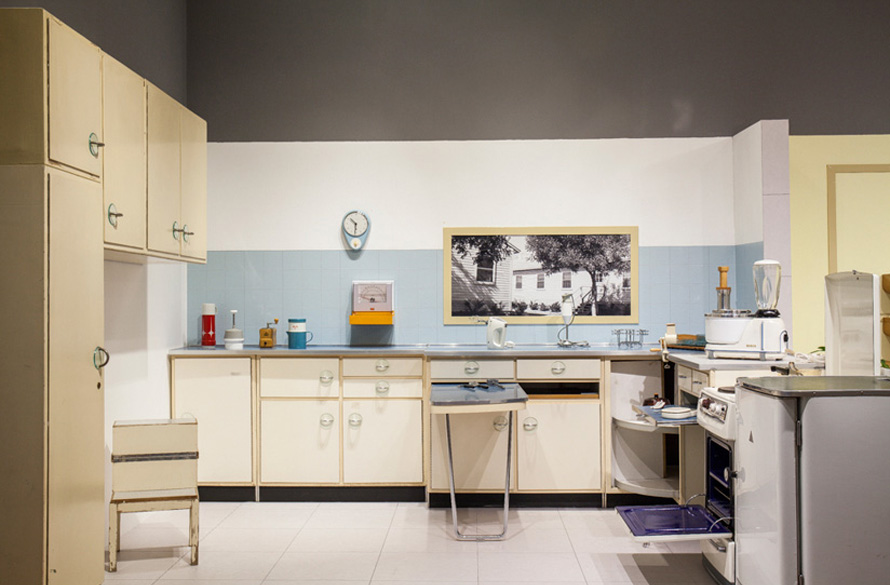

HOME
> 미술사업 >
소장품 수집 및 보존
소장품 수집 및 보존
사회를 위해 신탁 받은 유물과 표본을 소장하고
미래 세대를 위해 다양한 기억을 보호합니다
현대미술
한국 현대미술의 아카이브디자인
20세기 모던 디자인의 흐름-  키친 컬렉션 - 1

금호미술관은 현대미술작품 영역에서 디자인·건축으로 넓혀 2000년대 중반부터 디자인에 대한 컬렉션과 리서치를 지속하고 있습니다. 모던 디자인의 시초라 불리우는 20세기 초 독일의 바우하우스의 오리지널 오브제와 브로이어(Marcel Breuer), 반 데어로에(Mies van der Roge) 등 유명 건축가 겸 디자이너들이 제작한 가구를 시작으로, 이에 영향을 받은 다수의 디자인들을 소장하고 있습니다. 1927년 제작된 오리지널 프랑크푸르트 부엌(Frankfurt Kitchen)컬렉션은 생활문화 전반에 대한 미술관의 관심을 반영하고 있으며, 20세기 초반부터 중반까지 만들어진 유럽의 어린이 의자 컬렉션은 다양한 소재와 컬러, 디자인으로 기능성을 능가하는 조형미를 보여줍니다.